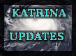

Below is Lucy's email message:
Dear Phil, Thank You for you concern and I have a lot to tell you...However
it is now 11:35 CST and I just returned home after helping 9 N.O. family and
friends get re-located to BR...My power has just been restored after 3 days
and so I'm attempting to communicate with all concerned...We got off
relatively well in BR and find in the days ahead that there are MANY who
will need help from NOLA and vicinity...So far we have not had a lot of
success in contacting N.O. or Slidell family due to power and communications
being out but were able to be re-united with one of my wife's brothers...If
you are able to get any info on contacts in this area, please let me know
and I'll do all I'm able to try and reach them or at least find out what I
can about their well-being...Thanks and let's keep in touch.
Loren
PS: If you are serious about helping us down here, I encourage you to either get together as many friends as you have and contribute to a bonafide hurricane relief organization like the Red Cross or contact me and I'll help you contact other organizations locally who are helping with food, clothing and shelter.
Thanks again,
Loren
Healing Place Church, 19202 Highland Rd. Baton Rouge, La 70809 - Phone # (225) 753-2273
Folks may also contact them at: www.healingplacechurch.org
HPC website is informative and easy to navigate to various options...Thanks for caring and I'll stay in touch,
Loren
All of the prayers worked. We are fine...devastated but fine. We did not suffer any serious damage physically, mentally that is another story.
We still have no power at home and it came on at my office last night at 8:30. I am trying to sort through things this morning in my office. The building lost a little of the roof, that is minor compared to what it could have been.
We have thousands of refugees here in Houma from New Orleans. They are still searching and rescuing in New Orleans. They are hauling those that were in the Super Dome to the Houston Astro Dome. Our lives will never be the same here in southern Louisiana. I can not imagine the 20 feet of water now in New Orleans. The water in the city is now even with the water level in Lake Ponchatrain.
All we need is for you to keep praying and for the Good Lord and Guardian Angel to keep watch over us. I felt their presence many times when the 100 mile winds were scaring me out of my wits. I will be in touch.
Thanks Bunk, for everything.
We had winds of over 100 miles per hour for several hours. This seems so surreal...we still are without power at home but should have it soon. Those poor people that are still trapped in New Orleans..the water in the city is now even with the water in Lake Ponchatrain. It seems like the worst nightmare in the world...it is hard to believe that New Orleans can exist again.
We have thousands of refugees plucked from rooftops in our shelter here. I have never seen so many shelters and they still need more. Please pray for the people of South Louisiana and thank you for the email..it means a lot. Lucy
Thanks,
Michelle
Loren
We are trying to help the evacuees, I do not like to refer to them as refugees, find temporary or permanent shelter. Our office has remained open around the clock. We are still awaiting the arrival of FEMA...don't get me going on that! No one can say when they are coming or when they will arrive at the shelters. I am a contact person and I have all of these volunteers signed up to help and I can not help the poor souls needing help because I can not tell them when the help is coming! It is very frustrating!
The State of Louisiana is doing a good job.They have several sites here for those needing temporary and maybe not so temporary food stamps and the unemployment office is also here helping the displaced oil field and other workers. We have many businesses in Houma that are going to the shelters and recruiting the residents for jobs here.
Many of the rigs in the western Gulf are ready to get back to work and many businesses here have extended their hours so they are hiring. The schools are at the shelters enrolling the children. The schools may have to "platoon" the classes..meaning some will go for 7 a.m. to noon and the others from 1 pm til 6 pm. We will do what we have to do.
South Louisiana folks have big hearts and a lot of love to give. Ray and I have been here 18 years so we are considered by them to be "Fellow Cajuns." Thank you for the article again and for keeping us in your thoughts and prayers.
Lucy
Looks like the Superdome may not have to be torn down and the lights came on in a couple of the large hotels on Canal St..the Sheraton and Mariott.
I am beginning to believe that their may be a light at the end of the tunnel. Thank you so much for keeping me in touch with the rest of the world. Ray says thank you too.
Lucy
Great news! Today New Orleans reported that they would be able to have Jazz Fest in April 2006. They do not know if they will be able to have it at the New Orleans Fairgrounds...but they intend to have it somewhere. Also heard that New Orleans Airport will open on Sept 19...not November. I am sure that flights will be limited..but that is still super progress. Things look better every day.
Lucy